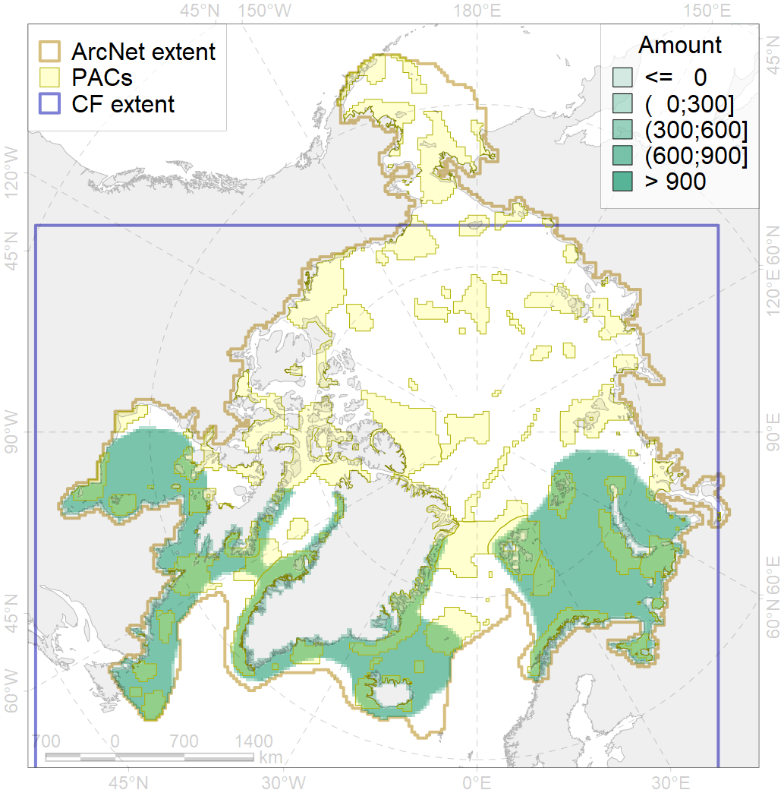
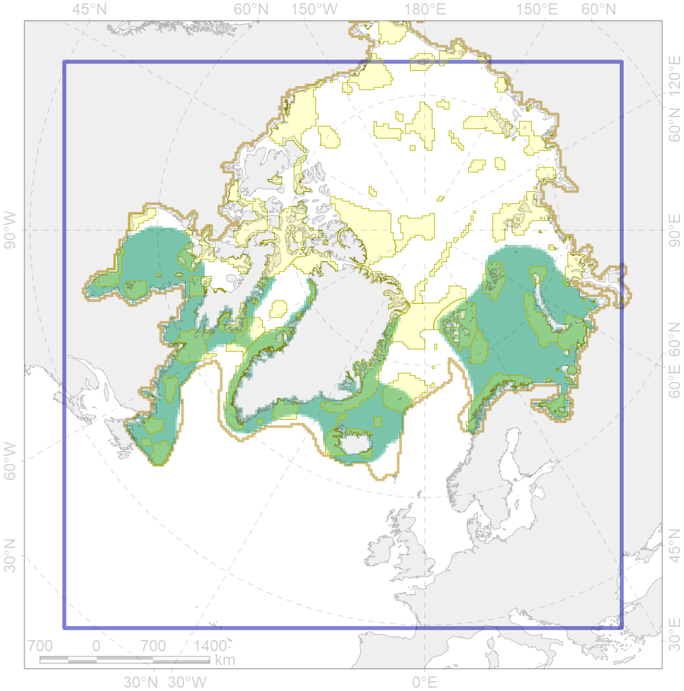

4003

| CF code | 4003 |
| CF name | Range of the Atlantic Capelin (Mallotus villosus) |
| Time Period | 1930s-2010s |
| Source(s) | Chernova, 2011; Coad, Reist, 2018; Mecklenburg et al., 2018 |
| Seasonality | Jan-Dec |
| Depth Horizon | Usually to 300-500 m, rare to 1000 m |
| Methodology | Map based on publications produced after field studies |
| Use Restrictions | Open sources |
| Author Name | Natalya Chernova |
| Notes | Chernova (2011) compiled the data of: Andriashev, 1954; Klyukanov, 1977; McAllister, 1984; Nielsen, Bertelsen, 1992; Dushchenko, 1993; Borkin, 1994; Ponomarenko, 1995; Jørgensen et al., 2005; Neelov, Chernova, 2005; Pethon, 2005; Stiansen, Filin, 2008; Ekosistema …, 2008; Møller et al., 2010 |
| Scenario’s Target | 0.03 |
| Target Achievement | 0.355 (Scenario: 1183.0%) |
| PAC | Share of the Total Amount within the PAC | Share of the Target Achievement for the ArcNet | PAC’s Contribution to the Target Achievement |
|---|---|---|---|
| 16 | 0.1%0.1% | 3.1%3.1% | 0.3%0.3% |
| 18 | 0.0%0.0% | 1.3%1.3% | 0.1%0.1% |
| 19 | 0.5% | 15.3% | 1.3% |
| 20 | 1.9%2.0% | 60.2%63.3% | 5.1%5.4% |
| 21 | 2.2%2.3% | 65.3%67.0% | 5.5%5.7% |
| 22 | 1.5% | 48.5% | 4.1% |
| 23 | 0.2%0.2% | 5.0%5.6% | 0.4%0.5% |
| 24 | 0.0%0.1% | 1.3%1.8% | 0.1%0.2% |
| 25 | 0.1%0.1% | 1.5%2.0% | 0.1%0.2% |
| 26 | 0.6%0.7% | 16.9%18.6% | 1.4%1.6% |
| 27 | 1.9%2.2% | 57.1%60.9% | 4.8%5.2% |
| 29 | 0.1%0.2% | 4.1%7.3% | 0.3%0.6% |
| 30 | 2.4%2.5% | 79.2%82.2% | 6.7%6.9% |
| 31 | 1.3%1.4% | 40.8%44.0% | 3.5%3.7% |
| 32 | 3.3%3.5% | 100.4%105.3% | 8.5%8.9% |
| 34 | 1.5%1.6% | 45.3%45.9% | 3.8%3.9% |
| 36 | 0.2%0.2% | 5.5%5.8% | 0.5%0.5% |
| 37 | 0.1%0.2% | 2.5%2.8% | 0.2%0.2% |
| 38 | 0.9%1.0% | 25.4%26.9% | 2.1%2.3% |
| 39 | 0.2%0.2% | 5.4%6.0% | 0.5%0.5% |
| 40 | 0.0%0.0% | 0.8%1.1% | 0.1%0.1% |
| 41 | 0.2%0.2% | 3.4%3.9% | 0.3%0.3% |
| 42 | 0.9%0.9% | 27.1%27.1% | 2.3%2.3% |
| 43 | 0.1% | 2.1% | 0.2% |
| 44 | 3.1%3.4% | 97.6%106.1% | 8.3%9.0% |
| 45 | 0.9%1.0% | 27.5%32.3% | 2.3%2.7% |
| 46 | 0.6%0.8% | 18.7%23.0% | 1.6%1.9% |
| 48 | 0.1%0.1% | 1.8%1.8% | 0.2%0.2% |
| 49 | 0.2%0.3% | 6.8%6.8% | 0.6%0.6% |
| 50 | 0.1% | 2.0% | 0.2% |
| 52 | 0.1% | 2.0% | 0.2% |
| 67 | 0.7%0.7% | 19.1%19.2% | 1.6%1.6% |
| 68 | 0.0% | 0.0% | 0.0% |
| 70 | 1.1%1.1% | 32.2%32.5% | 2.7%2.8% |
| 71 | 0.9% | 28.0% | 2.4% |
| 72 | 0.1%0.1% | 1.6%2.1% | 0.1%0.2% |
| 73 | 0.7%0.7% | 21.6%21.7% | 1.8%1.8% |
| 75 | 0.0%0.0% | 0.1%0.1% | 0.0%0.0% |
| 76 | 2.3%2.4% | 71.5%72.6% | 6.0%6.1% |
| 77 | 0.8% | 23.6% | 2.0% |
| 78 | 0.0%0.0% | 0.1%0.3% | 0.0%0.0% |
| 79 | 0.7%0.8% | 19.9%20.0% | 1.7%1.7% |
| 80 | 0.2%0.3% | 5.9%6.5% | 0.5%0.6% |
| 81 | 1.1%1.1% | 31.6%32.0% | 2.7%2.7% |
| inner | 34.0%36.3% | 1028.8%1080.6% | 87.0%91.3% |
| outer | 65.9%69.6% | 154.2%254.0% | 13.0%21.5% |
| † supplement values are for area consistence whereas principal values are for Accenter compatible gridded stats |